RoboSet Dataset
Introducing RoboSet, a large-scale real-world multi-task dataset collected across a range of everyday household activities in kitchen scenes. RoboSet consists of a mix of kinesthetic demonstrations as well as teleoperated demonstrations. The dataset consists of multi-task activities with four different camera views per frame, and variations in the scene for every demonstration.
Hierarchy of data
- Activity
-
Task
- Scenes
-
Task
Dataset composition
The dataset consists of various setups and features
-
Source of dataset
- The dataset has been collected from multiple sources, such as kinesthetic demonstrations and teleoperation. Kinesthetic demonstrated data was collected by playing back a demo trajectory with a new scene obtained by re-arranging objects, for every rollout. The teleoperated data was collected using an Oculus Quest 2 controller. The teleoperator would use the controller to guide the robot to perform the task; teleoperation ensured that each rollout was unique. Overall we have 30,050 trajectories in the dataset, out of which 9,500 are collected through teleoperation.
-
Camera viewpoints
- We collected the dataset with 4 distinct camera views per frame. This could be helpful for downstream policy learning where the visual representations are not tied to a specific viewpoint, and are robust to viewpoint variations.
-
Different Tasks
- We have a total of 12 skills, adequately represented across 38 tasks. Each task involves executing a distinct skill on an object in the scene.
- We categorize all the tasks in terms of semantic activities, such that each activity consists of 4-6 tasks. This could be helpful in developing multi-task multi-step agents that can chain different skills together to solve the entire sequence of tasks in an activity.
- Since each task is defined through a language instruction, there could be opportunities for language guided sequencing, and generalization with LLMs.
In the tabs below, we include 9,500 teleoperated trajectories, that can be immediately downloaded. Please use the search bar to query a specific task or activity. We will soon update the website with the entire 30,050 trajectories.
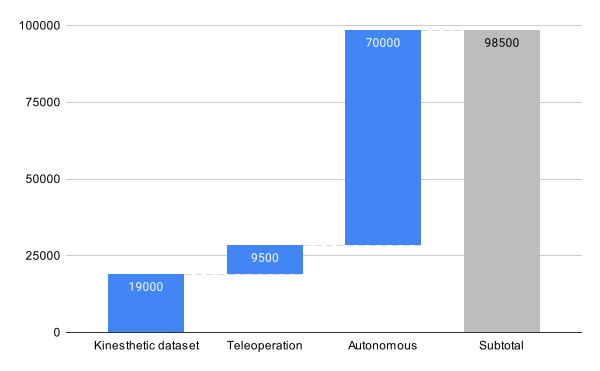
RoboSet Data composition
Data
| Activity | Task | Scene | Number of demonstrations | Example | Download |
|---|---|---|---|---|---|
| Baking Prep | Slide-Open Drawer | Scene 1 | 250 Demonstrations | 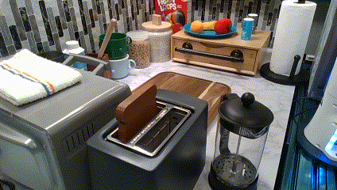 | Download now |
| Baking Prep | Slide-Open Drawer | Scene 4 | 250 Demonstrations | 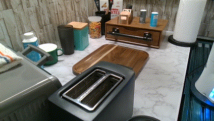 | Download now |
| Baking Prep | Pick Butter | Scene 1 | 250 Demonstrations | 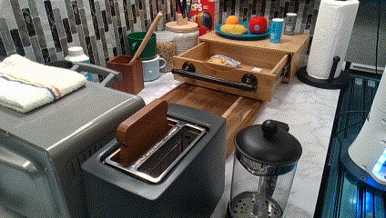 | Download now |
| Baking Prep | Pick Butter | Scene 4 | 250 Demonstrations | 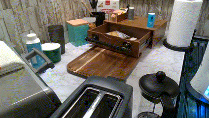 | Download now |
| Baking Prep | Place Butter | Scene 1 | 250 Demonstrations | 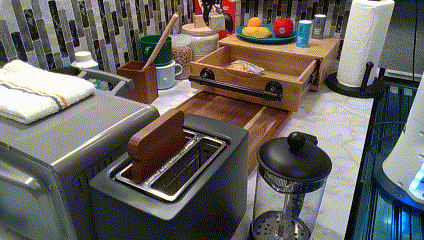 | Download now |
| Baking Prep | Place Butter | Scene 4 | 250 Demonstrations | 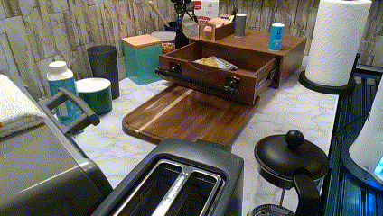 | Download now |
| Baking Prep | Slide-Close Drawer | Scene 1 | 250 Demonstrations | 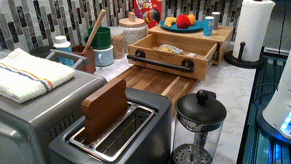 | Download now |
| Baking Prep | Slide-Close Drawer | Scene 4 | 250 Demonstrations | 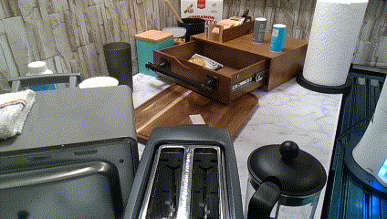 | Download now |
| Clean Kitchen | Pick Lid | Scene 3 | 250 Demonstrations | 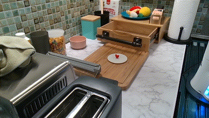 | Download now |
| Clean Kitchen | Cap Lid | Scene 3 | 250 Demonstrations | 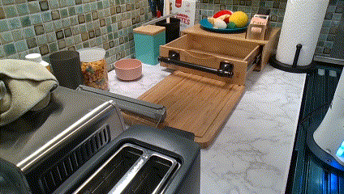 | Download now |
| Clean Kitchen | Slide-Close Drawer | Scene 3 | 250 Demonstrations | 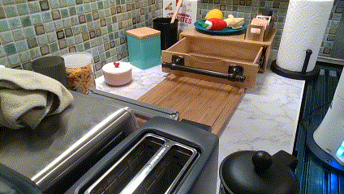 | Download now |
| Clean Kitchen | Flap-Close Oven | Scene 3 | 250 Demonstrations | 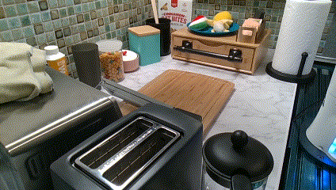 | Download now |
| Clean Kitchen | Pick Towel | Scene 3 | 250 Demonstrations | 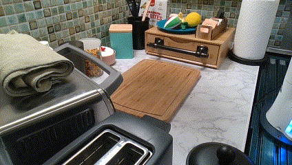 | Download now |
| Clean Kitchen | Wipe Counter | Scene 3 | 250 Demonstrations |

|
Download now |
| Heat Soup | Flap-Open Oven | Scene 2 | 250 Demonstrations | 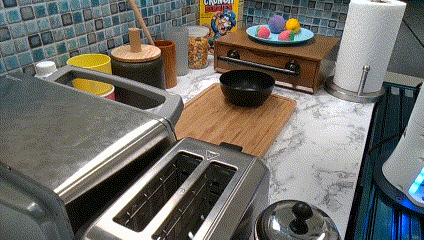 | Download now |
| Heat Soup | Flap-Open Oven | Scene 4 | 250 Demonstrations | 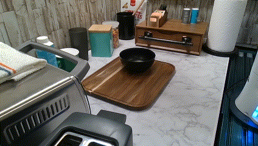 | Download now |
| Heat Soup | Pick Bowl | Scene 2 | 250 Demonstrations | 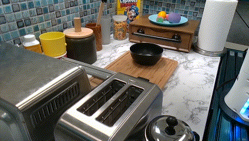 | Download now |
| Heat Soup | Pick Bowl | Scene 4 | 250 Demonstrations |

|
Download now |
| Heat Soup | Slide-In Bowl | Scene 2 | 250 Demonstrations | 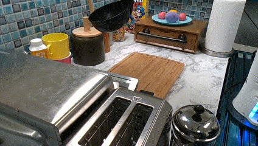 | Download now |
| Heat Soup | Slide-In Bowl | Scene 4 | 250 Demonstrations | 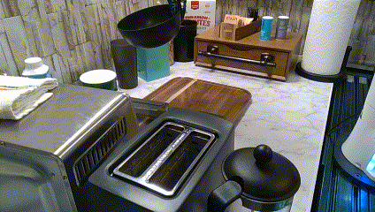 | Download now |
| Heat Soup | Flap-Close Oven | Scene 2 | 250 Demonstrations | 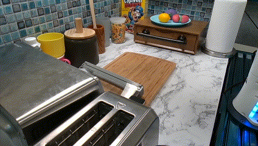 | Download now |
| Make Tea | Uncap Lid | Scene 2 | 250 Demonstrations | 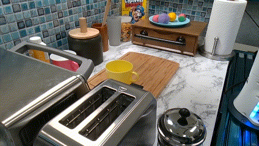 | Download now |
| Make Tea | Place Lid | Scene 2 | 250 Demonstrations | 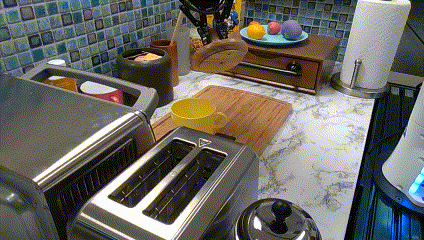 | Download now |
| Make Tea | Pick tea | Scene 2 | 250 Demonstrations | Download now | |
| Make Tea | Place Tea | Scene 2 | 250 Demonstrations | 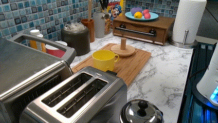 | Download now |
| Make Tea | Pick Lid | Scene 2 | 250 Demonstrations | 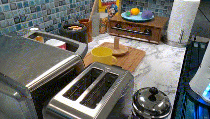 | Download now |
| Make Tea | Cap Lid | Scene 2 | 250 Demonstrations | 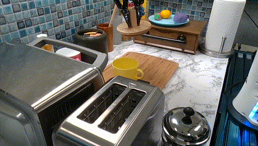 | Download now |
| Make Toast | Plunge Toaster | Scene 2 | 250 Demonstrations | 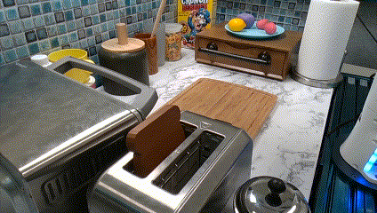 | Download now |
| Make Toast | Pick Toast | Scene 1 | 250 Demonstrations | 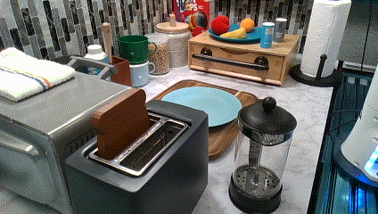 | Download now |
| Make Toast | Place Toast | Scene 1 | 250 Demonstrations | 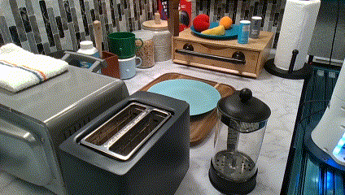 | Download now |
| Serve Soup | Flap-Open Oven | Scene 2 | 250 Demonstrations | 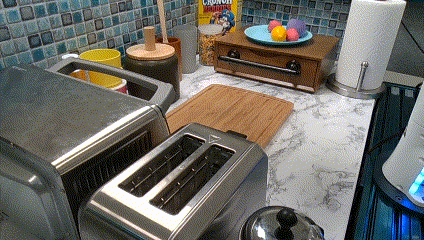 | Download now |
| Serve Soup | Slide-Out Bowl | Scene 2 | 250 Demonstrations | 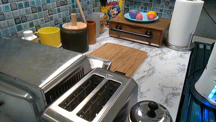 | Download now |
| Serve Soup | Place Bowl | Scene 2 | 250 Demonstrations | 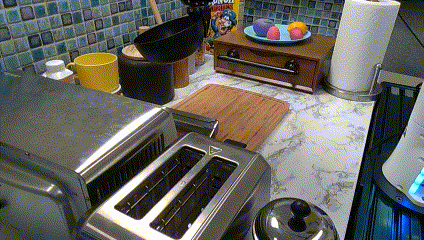 | Download now |
| Serve Soup | Flap-Close Oven | Scene 2 | 250 Demonstrations | 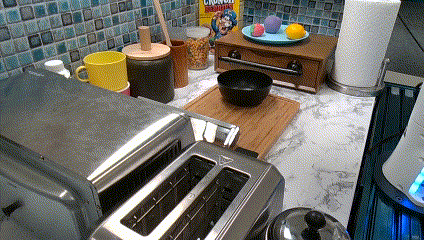 | Download now |
| Stow Bowl | Slide-Open Drawer | Scene 3 | 250 Demonstrations | 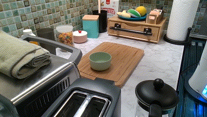 | Download now |
| Stow Bowl | Pick Bowl | Scene 3 | 250 Demonstrations | 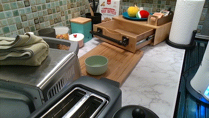 | Download now |
| Stow Bowl | Place Bowl | Scene 3 | 250 Demonstrations | 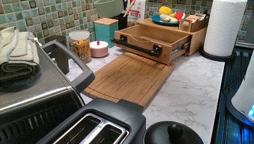 | Download now |
| Stow Bowl | Slide-Close Drawer | Scene 3 | 250 Demonstrations | 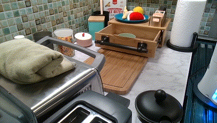 | Download now |